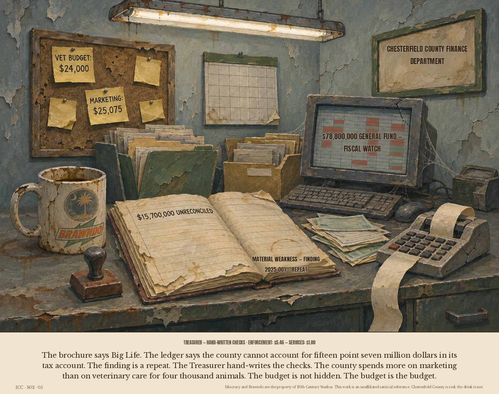

About this panelICC · S02 · 05›
Series id: ICC · S02 · 05
Rendered: 2026-11-07
Idiocracy and Brawndo are the property of 20th Century Studios. This work is an unaffiliated satirical reference. Chesterfield County is real; the drink is not.